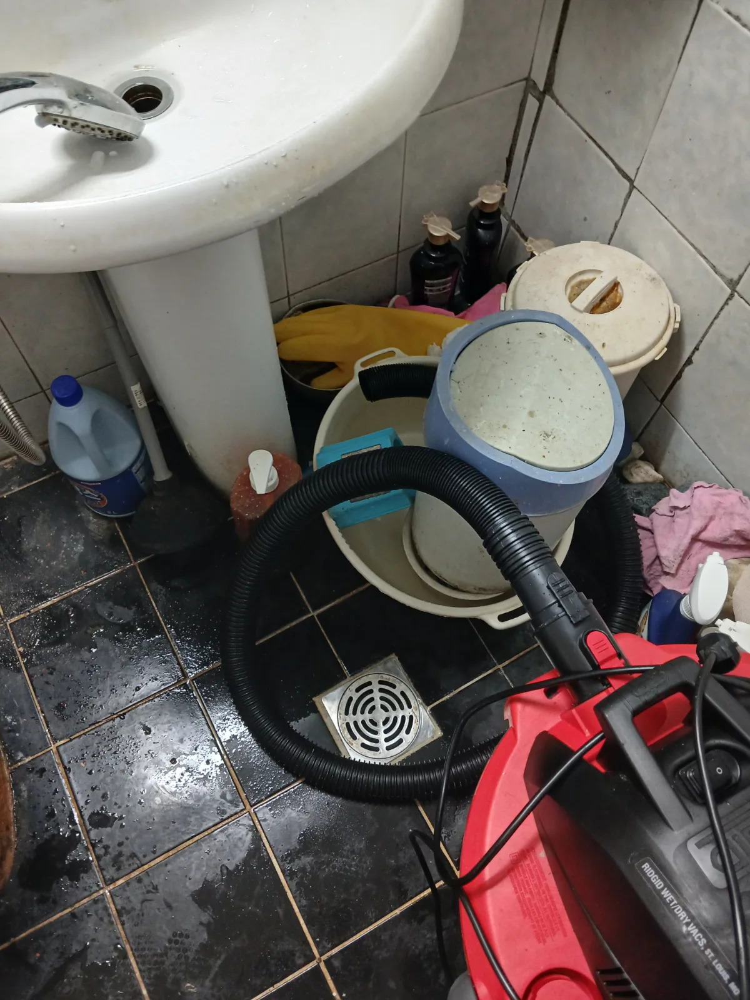

수원시 팔달구 화서동 변기막힘, 현장 도착 후 진단
수원시 팔달구 화서동 변기막힘 긴급 요청을 접수한 신라건축설비는 작업에 필요한 장비를 준비해 신속하게 현장으로 출동했습니다. 숙련된 변기막힘 전문 기술자가 직접 물내림 상태와 수위 변화를 확인한 결과, 단순히 물길만 잠시 확보해서는 재발 가능성이 남을 수 있는 상황이었습니다. 변기 내부 막힘과 하부 오수관 문제를 정확히 구분하기 위해 변기 탈거 작업을 결정했습니다. 신라건축설비는 변기막힘 증상만 보고 장비를 무리하게 투입하지 않고, 막힘 위치와 배관 구조에 맞춰 석션·관통·탈거 작업 중 적합한 해결 방법을 선택합니다.
1단계: 증상 확인과 필요한 장비 작업
먼저 급수 밸브를 잠그고 변기 내부의 물을 제거한 다음 도기와 주변 시설물이 손상되지 않도록 변기를 조심스럽게 탈거했습니다. 변기를 들어내자 바닥의 오수관 입구가 드러났으며, 변기 트랩과 하부 배관을 각각 점검할 수 있는 상태가 되었습니다. 화서동 변기막힘의 원인이 변기 내부에 있는지 오수관 초입에 있는지 구분하면서 작업 범위를 설정했습니다. 이처럼 변기 탈거는 단순 관통으로 해결되지 않는 막힘을 정확하게 진단하고 잔존 이물질까지 제거하기 위한 전문 작업입니다.

2단계: 원인 구간 처리와 정상 작동 확인
탈거한 변기 내부에 리지드 습식 석션기를 연결해 고여 있던 물과 잔존 이물질을 강하게 흡입했습니다. 이어서 석션만으로 남을 수 있는 이물질까지 밀어내기 위해 에어건을 사용하여 변기 내부의 굴곡진 트랩 구간을 추가로 관통했습니다. 변기 배출구와 바닥 오수관 입구를 함께 정리한 후 변기를 원래 위치에 재설치했습니다. 마지막으로 여러 차례 물을 내려 배수 속도와 변기 수위, 하부 누수 여부를 확인하며 수원 화서동 변기막힘 작업을 마무리했습니다.

작업 결과와 재발 방지 안내
석션과 에어건을 복합적으로 사용한 뒤 변기 물이 정체되거나 차오르지 않고 정상적으로 배출되는 것을 확인했습니다. 변기에는 많은 양의 휴지와 물에 녹지 않는 물티슈·위생용품·생활용품을 넣지 않는 것이 중요합니다. 막힘이 반복된다면 약품이나 뚫어뻥만 계속 사용하기보다 변기 트랩과 하부 오수관을 구분해 전문적인 점검을 받아야 합니다.
신라건축설비는 수원시 팔달구를 비롯한 경기 전 지역과 서울 전 지역에 신속하게 출동하여 변기막힘·싱크대막힘·하수구막힘을 전문적으로 해결합니다. 단순 관통에 그치지 않고 현장 상태에 따라 변기 탈거, 리지드 석션, 에어건, 배관 내시경검사와 오수관 점검을 적용합니다. 점검 과정에서 배관 파손이나 공용배관 문제가 발견될 경우 배관 보수·교체 및 대형 배관공사까지 자체적으로 대응할 수 있는 종합 배관 전문업체입니다.
최종 조치: 변기를 안전하게 탈거한 뒤 리지드 습식 석션기로 내부의 물과 잔존 이물질을 흡입하고 에어건으로 변기 트랩을 추가 관통했습니다. 하부 오수관 입구까지 점검한 후 변기를 재설치하고 반복 통수검사로 정상 배수를 확인했습니다.
현장 방문 전 확인하는 비용과 작업 범위
신라건축설비는 현장 증상과 배관 구조를 확인한 뒤 필요한 작업과 예상 비용을 안내합니다. 단순 관통으로 해결되는지, 배관내시경·석션·고압세척 또는 변기 탈거가 필요한지는 현장 상태에 따라 달라집니다. 출장비와 야간 작업비, 추가 장비 비용이 발생할 수 있는 경우 작업 전에 먼저 설명하고 동의를 받은 범위에서 진행합니다.
업체를 선택할 때 확인할 사항
무조건적인 ‘0원’ 표현보다 실제 작업 범위, 추가 비용 조건, 사용 장비와 사후 대응 기준을 확인하는 것이 중요합니다. 해결되지 않았을 때의 비용 기준과 작업 후 동일 증상 발생 시 점검 범위를 사전에 문의해두면 불필요한 분쟁을 줄일 수 있습니다.
수원시 팔달구 변기막힘 자주 묻는 질문
변기를 꼭 탈거해야 하나요?
변기 물을 내리면 수위가 비정상적으로 차오른 뒤 천천히 빠져 정상적인 사용이 어려웠으며, 단순 압축이나 관통만으로는 정확한 막힘 위치를 확인하기 어려운 상태였습니다.처럼 증상이 나타나더라도 원인은 현장마다 다를 수 있습니다. 장비와 배관 구조를 확인한 뒤 필요한 작업 범위를 안내합니다.
작업 전 비용을 알 수 있나요?
작업 전 증상과 현장 여건을 확인해 예상 범위와 비용을 먼저 안내합니다. 변기 탈거, 장비 추가 투입 또는 공용배관 작업이 필요한 경우 고객 동의 없이 임의로 진행하지 않습니다.
같은 증상이 다시 생기면 어떻게 하나요?
완료 후 정상 작동을 함께 확인하고 작업 범위에 따른 사후 안내를 드립니다. 동일 증상이 반복되면 현장 기록을 기준으로 원인을 다시 점검합니다.
변기막힘 서울·경기 출동지역
신라건축설비는 수원시 팔달구 화서동 현장을 포함해 서울 25개 구와 경기도 31개 시·군의 배관 문제를 상담합니다. 현장 거리와 기사 배정 상황에 따라 출동 가능 여부를 먼저 안내드립니다.
서울 전 지역
강남구 · 강동구 · 강북구 · 강서구 · 관악구 · 광진구 · 구로구 · 금천구 · 노원구 · 도봉구 · 동대문구 · 동작구 · 마포구 · 서대문구 · 서초구 · 성동구 · 성북구 · 송파구 · 양천구 · 영등포구 · 용산구 · 은평구 · 종로구 · 중구 · 중랑구
경기도 주요 출동지역
수원시 · 용인시 · 고양시 · 화성시 · 성남시 · 부천시 · 남양주시 · 안산시 · 평택시 · 안양시 · 시흥시 · 파주시 · 김포시 · 의정부시 · 광주시 · 하남시 · 광명시 · 군포시 · 양주시 · 오산시 · 이천시 · 안성시 · 구리시 · 의왕시 · 포천시 · 양평군 · 여주시 · 동두천시 · 과천시 · 가평군 · 연천군